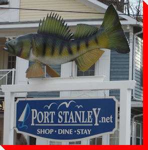

LARGE CANADIAN ROADSIDE ATTRACTIONS

"Quota" The Perch
Port Stanley, Ontario
Tweet
Credit:
Vicci Coughlin of
The Telegraph Inn
and Jen Reimer of
Port Stanley Business Improvement Area
,
originally Carrie of the
Kettle Creek Marina
Return to Ontario Page
Main
|
What's New
|
By Location
|
Alphabetical Listing
|
By Type
Wanted Photos List
|
Archive